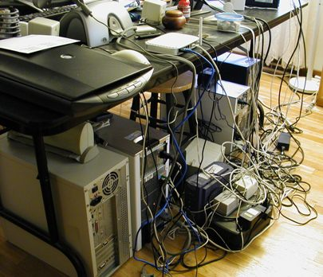

Docker and JBoss
The perfect combination
@marekgoldmann
Toruń JUG, 29th Oct 2014
Applications are complex
http://www.reddit.com/r/pics/comments/nf8la/im_always_tempted_to_switch_two_random_cables_to/
Different deployment environments
http://www.shedworking.co.uk/2012/03/nuts-and-bolts-cable-ties.html
A project to manage containers.
Containers?
Yes, a lightweight operating system virtualization.
How this compares to a virtual machine?
It's completely different.
Comparison
| Virtual Machine (KVM, VMware) | Container (LXC, OpenVZ) | |
|---|---|---|
| Hardware | Simulated | Uses it (almost) directly |
| Supported OS'es | Almost any | Only Linux |
| Space | User space | Kernel space |
| Separation | Full | Control Groups (cgroups) |
| Startup time | Seconds to minutes | Miliseconds |
| Scalability | A few | Sky is the limit (thousands) |
| Custom kernel | Yes | No |
| Enterprise features (live migration, etc) | Yes | No |
| Ease of creation | Moderate | Easy |
| Time consumption of creation | High | Low |
| Size | HUGE | Small |
Linux FTW!
(still)
Source: http://goo.gl/bqb360
Docker community...
- GitHub
- >1100 watchers
- >14000 stars
- >2700 forks
- >660 open issues
- >100 pull requests
- Over 585 contributors
- avg 17 commits / day
- 90% are external
- Many meetups all over the world
- 50 active meetup groups
JBoss and Docker
Dockerized projects
- WildFly
- Keycloack
- TorqueBox
- Aerogear
- Immutant
- Nodyn
- LiveOak
- Infinispan
- ModeShape
- ...
Demos!
A few tips
I need metrics!
- Use
iptablesfor network - Parse
/sys/fs/cgroup/for everything else
I need to limit resources!
- CPU:
docker run -c 512 [...] - Memory:
docker run -m 128m [...] - Disk space: 10GB by default
I need to do backup!
- Files?
- Use volumes
- Data?
- Use links
I need to access my containers!
- Do you own the host?
- Use
nsenter
- Use
- In other cases:
- Run
sshdinside of the container (boooo...)
- Run
I need performance!
RLY?
- CPU: native
- Memory: (almost) no overhead
- Network: no overhead with
--net host - I/O: native on volumes
Thanks!

Attributions:
- https://www.docker.io/